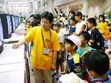
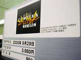

page1 ・・・ page2 ・・・ page3
|
●カードキャプターさくら 〜友枝小学校大運動会〜
10月6日発売予定 エム・ティー・オー |
| コミックやアニメなど、いろいろなメディアで大人気の「カードキャプターさくら」がゲームになりました。今回は、友枝小学校の大運動会でさくらたちおなじみのキャラクターが大活躍。赤組、白組にわかれて、プログラムをこなしながらポイントを競っていきます。「並んでいるのは、小さな女の子かアニメファンの方、と両極端ですね。ゲームのほうも子供向けにゲームは簡単に、マニア向けに絵は丁寧に、といった感じになっています」、と開発の方。 |
| ●コマンドマスター 2000年秋発売予定 エニックス |
| 加速度センサーを搭載した新感覚RPGです。ユーザーの動きが直接コマンドになるのですが、その種類はなんと80以上とか…。うまくアクションをキメて、いろんなネオスを召還しよう。男の子達が楽しそうにプレーしているのが印象的ですね。 |
| ●ドキドキ伝説 魔法陣グルグル 2000年秋発売予定 エニックス |
 多いときは1時間以上の待ち時間になるほど、大人気の魔法陣グルグル。スーパーファミコン版よりもはるかにボリュームアップしているそうですので、長く遊べる1本になりそうですね。小さな女の子に混じって、アニメファンの方もよく並ばれてるようです。 多いときは1時間以上の待ち時間になるほど、大人気の魔法陣グルグル。スーパーファミコン版よりもはるかにボリュームアップしているそうですので、長く遊べる1本になりそうですね。小さな女の子に混じって、アニメファンの方もよく並ばれてるようです。 |
| ●六門天外 モンコレナイトGB 11月発売予定 角川書店 |
|  人気急上昇中のテレビアニメがゲームになりました。キチン探知機でモンスターを探して、できるだけたくさんのモンスターをゲットし、いろんなコンボを試してみよう。「モンスターの組み合わせで攻撃が変化するのが、おもしろかったです」と、ユーザーの反応も上々のようです。 |
| ●ロックマンX サイバーミッション 2000年10月20日発売予定 カプコン |
| ロックマンシリーズのなかでも特に人気の高い「X」が、ゲームボーイに初登場です。新キャラクターも登場するそうで、男の子達が楽しそうにプレーしていました。「息の長いシリーズですからね、年輩の方も結構いらっしゃるんですよ」と、スタッフの人も満足げな表情です。 |
| ●新世紀エヴァンゲリオン 麻雀補完計画 9月29日発売予定 キングレコード |
|  空前の大ヒットとなったアニメ「新世紀エヴァンゲリオン」のキャラクターたちと、麻雀で対戦しましょう。「エヴァグッズのひとつとして見ていただけるとうれしいですね」とはスタッフの方のコメント。ファンに混じってプレーするお父さんの姿がほほえましいですね。 |
ゲームボーイカラー体験コーナー（ライセンシー）その２
page1 ・・・ page2 ・・・ page3
|